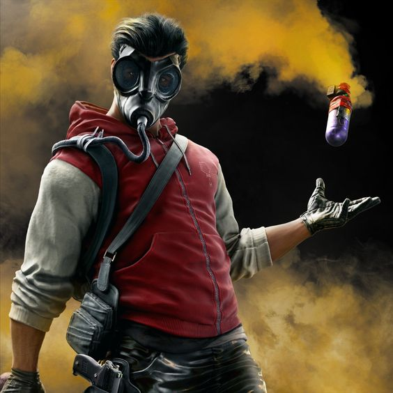

Smoke, também conhecido como James "Smoke" Porter, é um Operador defensivo em Rainbow Six Siege. Ele é um ex-agente do SAS (Special Air Service) do Reino Unido. Sua especialidade reside no uso de bombas de fumaça táticas. Ele pode lançar essas bombas para criar densas cortinas de fumaça, obstruindo a visão dos oponentes, dificultando suas investidas e manipulando o campo de batalha. Além disso, as bombas de fumaça de Smoke podem ser utilizadas para negar plantios, controlar áreas-chave e fornecer suporte à equipe durante revives ou movimentações estratégicas. Ele é uma adição valiosa às equipes defensivas devido à sua habilidade única de controlar o ambiente e fornecer vantagens táticas.
